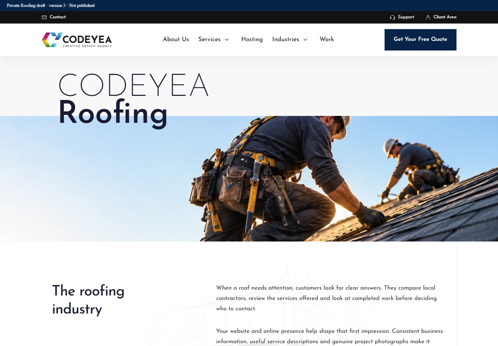
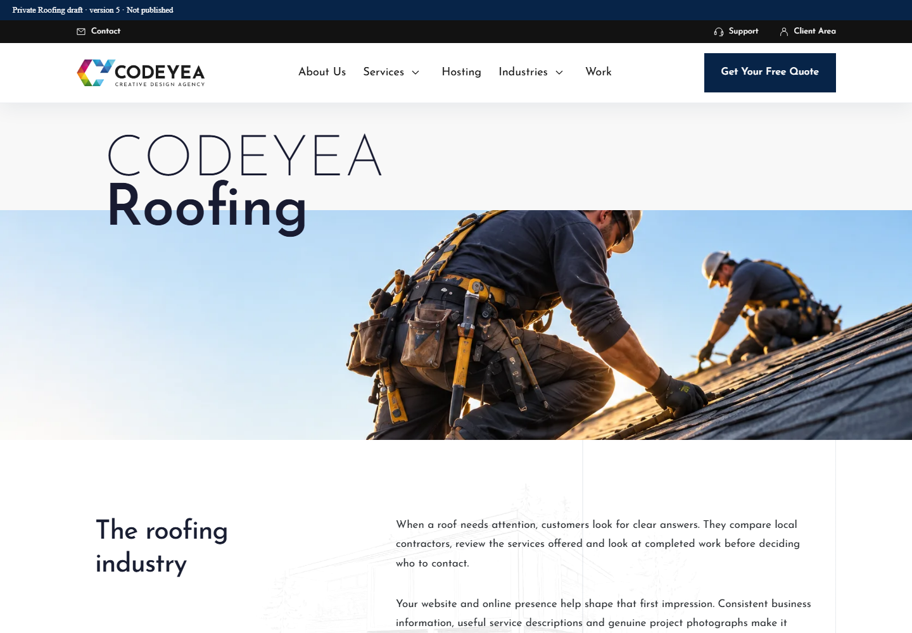
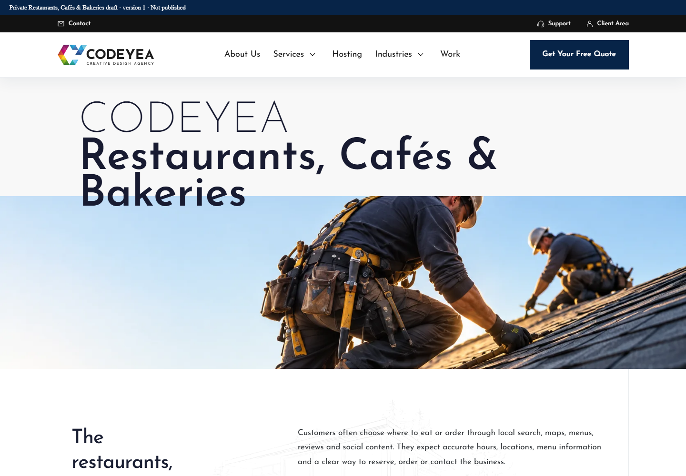
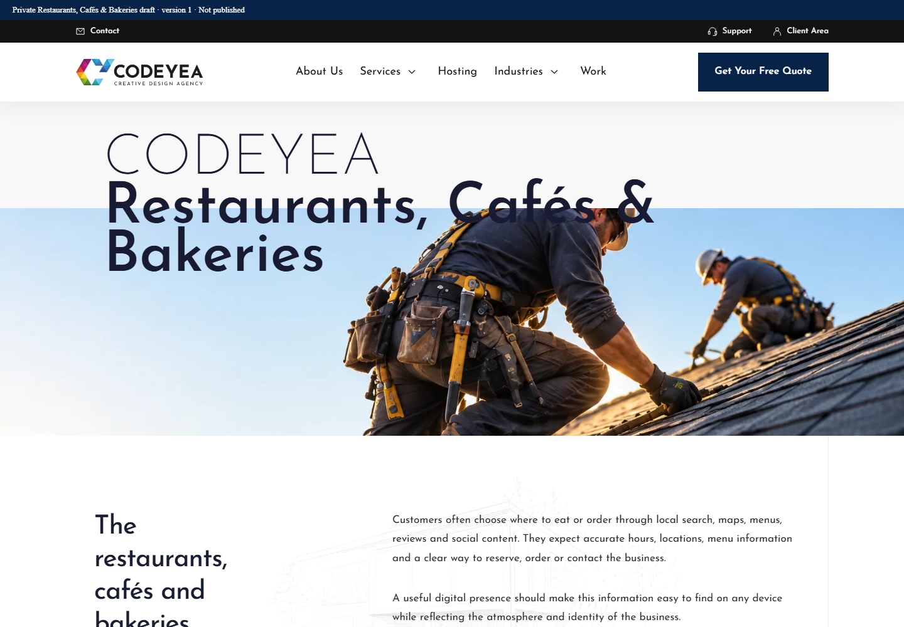
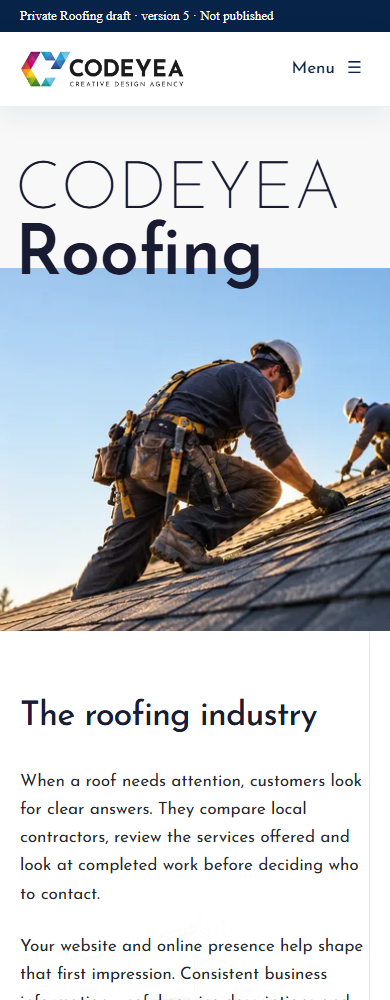
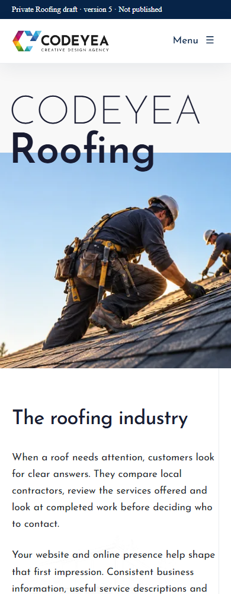
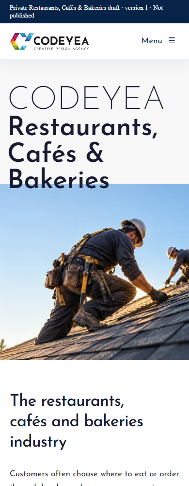
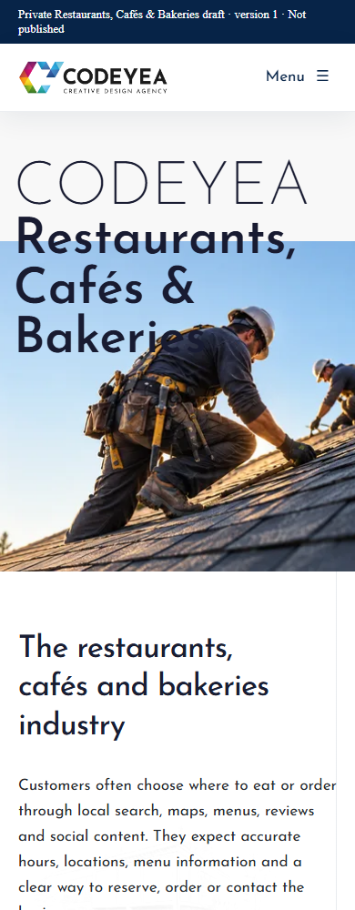

Only src/styles/about.css changed in application code. The title reserves half a line of document flow, with subsequent lines painting above the image through the existing z-index. No title-specific exceptions or JavaScript measurements.
Verification report · All 35 geometry checks · Interaction and fallback checks
All captures are native resolution. Click a capture to open the original. Mobile Restaurants naturally uses three lines under the unchanged typography.








All imagery remains temporary. External provider requests: 0 · Imports: 0 · AI images: 0. No provider key exposed. Nothing published or deployed.